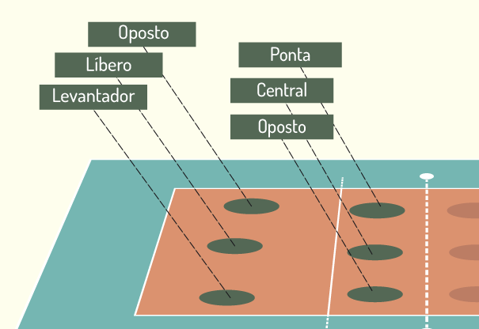

Ponteiros ou apontadores, são variáveis que armazenam o endereço de memória de outras variáveis. Dizemos que um ponteiro “aponta” para uma varíável quando contém o endereço da mesma. Os ponteiros podem apontar para qualquer tipo de variável. Portanto temos ponteiros para int, float, double, etc.
Para ser um ponta deve se mostrar vontade de executar esta função, atacando seja com força ou com inteligência. Deve sempre existir a intenção de se estabelecer um "domínio" sobre a defesa adversária. Por exemplo, se o bloqueio adversário é muito alto, o ponta deve saber utilizar esta situação à seu favor: olhar se não há espaços, procurar uma mão para explorar, recordando-se sempre de que um bloqueio tem mais chances de errar do que marcar um ponto, por mais intimidador que pareça ser. O ponta nunca deve aceitar que o bloqueio possa dominá-lo quando do confronto entre ambos. Um ataque não é uma ação de uma única dimensão, mas é um processo mental que parte de um predisposição mental. Entre o bloqueio e o ponta existe uma força de vontade. Nela, este último geralmente ganha (por exemplo, quando o ponta ataca na paralela girando o corpo para a diagonal). O ponta que possui um bom controle do movimento do pulso pode usá-lo até o último momento estando em vantagem em relação ao bloqueio adversário. Para obter tudo isso é essencial o controle e isso exige uma execução perfeita da função, especialmente no que se refere aos dois últimos passos e à "fase de voo". O ponta deve ser capaz de acertar a bola nas diferentes fases da sua trajetória de voo (isso é chamado "tempo de suspensão") e ter a capacidade de padronizar a fase de voo para dispor da melhor estrutura temporal para o contato com a bola.